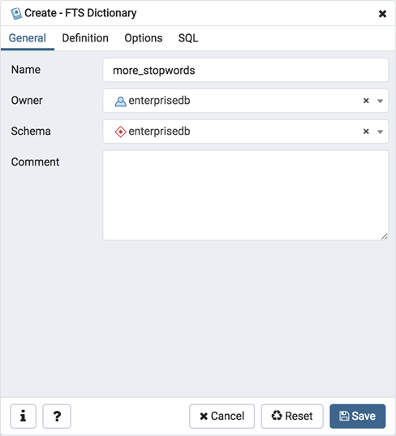
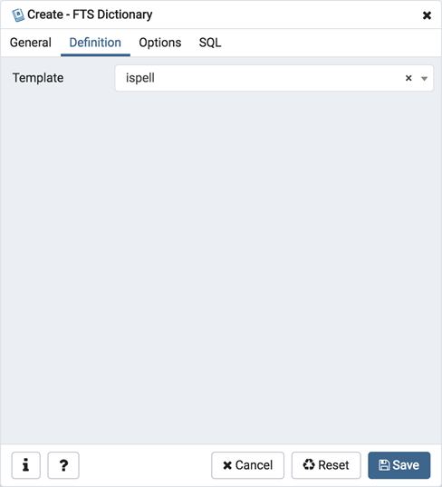
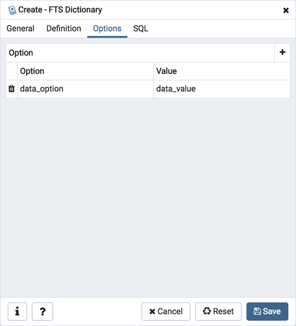
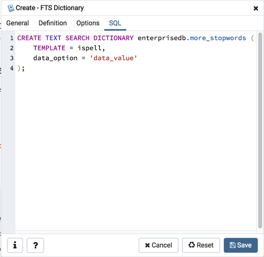

FTS Dictionary Dialog¶
Use the FTS Dictionary dialog to create a full text search dictionary. You can use a predefined templates or create a new dictionary with custom parameters.
The FTS Dictionary dialog organizes the development of a FTS dictionary through the following dialog tabs: General, Definition, and Options. The SQL tab displays the SQL code generated by dialog selections.
Use the fields in the General tab to identify the dictionary:
Use the Name field to add a descriptive name for the dictionary. The name will be displayed in the pgAdmin tree control.
Use the drop-down listbox next to Owner to select the role that will own the FTS Dictionary.
Select the name of the schema in which the dictionary will reside from the drop-down listbox in the Schema field.
Store notes about the dictionary in the Comment field.
Click the Definition tab to continue.
Use the field in the Definition tab to choose a template from the drop-down listbox:
Select ispell to select the Ispell template. The Ispell dictionary template supports morphological dictionaries, which can normalize many different linguistic forms of a word into the same lexeme. For example, an English Ispell dictionary can match all declensions and conjugations of the search term bank, e.g., banking, banked, banks, banks’, and bank’s. Ispell dictionaries usually recognize a limited set of words, so they should be followed by another broader dictionary; for example, a Snowball dictionary, which recognizes everything.
Select simple to select the simple template. The simple dictionary template operates by converting the input token to lower case and checking it against a file of stop words. If it is found in the file then an empty array is returned, causing the token to be discarded. If not, the lower-cased form of the word is returned as the normalized lexeme. Alternatively, the dictionary can be configured to report non-stop-words as unrecognized, allowing them to be passed on to the next dictionary in the list.
Select snowball to select the Snowball template. The Snowball dictionary template is based on a project by Martin Porter, inventor of the popular Porter’s stemming algorithm for the English language. Snowball now provides stemming algorithms for many languages (see the Snowball site for more information). Each algorithm understands how to reduce common variant forms of words to a base, or stem, spelling within its language. A Snowball dictionary recognizes everything, whether or not it is able to simplify the word, so it should be placed at the end of the dictionary list. It is useless to have it before any other dictionary because a token will never pass through it to the next dictionary.
Select synonym to select the synonym template. This dictionary template is used to create dictionaries that replace a word with a synonym. Phrases are not supported (use the thesaurus template (Section 12.6.4) for that). A synonym dictionary can be used to overcome linguistic problems, for example, to prevent an English stemmer dictionary from reducing the word Paris to pari.
Select thesaurus to select the thesaurus template. A thesaurus dictionary replaces all non-preferred terms by one preferred term and, optionally, preserves the original terms for indexing as well. PostgreSQL’s current implementation of the thesaurus dictionary is an extension of the synonym dictionary with added phrase support.
Click the Options tab to continue.
Use the fields in the Options tab to provide template-specific options. Click the Add icon (+) to add an option clause:
Specify the name of an option in the Option field
Provide a value for the option in the Value field.
Click the Add icon (+) to specify each additional option/value pair; to discard an option, click the trash icon to the left of the row and confirm deletion in the Delete Row popup.
Click the SQL tab to continue.
Your entries in the FTS Dictionary dialog generate a generate a SQL command. Use the SQL tab for review; revisit or switch tabs to make any changes to the SQL command.
Example¶
The following is an example of the sql command generated by user selections in the FTS Dictionary dialog:
The example shown demonstrates creating a custom dictionary named more_stopwords which is based on the simple template and is configured to use standard English.
Click the Info button (i) to access online help.
Click the Save button to save work.
Click the Cancel button to exit without saving work.
Click the Reset button to restore configuration parameters.